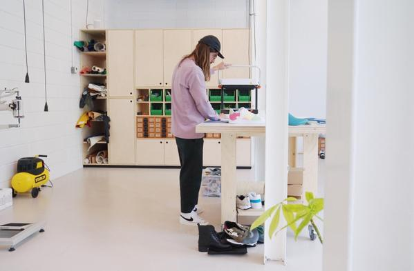

ØLÅF CITIZENS: STUDIO HAGEL
Text by Tiffany Chung
22 Sep 2020
The world has experienced a major upheaval in 2020 and everyone’s plans have been thrown off course. In these uncertain times, we can all learn to take a page from Mathieu Hagelaars’ book. The footwear designer and founder of Studio Hagel embraces the unexpected, isn’t afraid to change course, and finds innovative solutions in what others might see as mistakes. In this episode of Citizens, Mathieu shares how his experimental process has shaped the outcome of his projects and success of his studio.
Hey Mathieu, so you’ve said that you started your own studio because no one wanted to work with you. Now, you’ve worked with big international brands and great creative minds like Virgil Abloh, Daniel Arsham, Takashi Murukami. How does it feel to have come so far?
“Well, I feel blessed of course. When I first started I never expected I would work with these kinds of creative superheroes. I never expected it. When I started my studio five and half years ago, I never thought I would go abroad. I thought I would work with Dutch brands, but I never imagined going international."
Five and half years is fast.
“Yeah, that’s record fast. I’m still amazed by it and it wasn’t planned like this. I didn’t say okay within five years I’m going to work with the names you just mentioned. But I did focus on what I really wanted to do and knew that I wanted to do it the best. And thanks to Instagram, I had a stage to show my ideas.”
Wild concept made in collaboration with @opblaashelicopter Right: Mathieu Hagelaars.
Do you find that Instagram really helped you get off the ground?
“Yeah, sure. Still now people are asking me ‘Why are you sharing all your ideas?’ because people can just grab them from Instagram. But one of my best decisions was to share my ideas on Instagram. All the projects that I got came directly and indirectly from Instagram. It was the best way to start working and connecting with people."
STUDIO HAGEL designed and made this pair of custom sneakers for the @TakashiMurakami's exhibition #sneakersforbreakfast at ComplexCon.
Looking back, is there anything that you wish you knew when you were first starting out? Any advice you would give your past self or anyone looking to start their own studio?
“Man, that’s a question...I guess things are always going to be different from what you think. In the beginning, I had an idea that everything I was going to communicate, everything I was going to show, was going to be done by pen and paper. Everything had to be done the traditional way because that's how it was always done.That’s what I always had in my mind. My Instagram feed had to look like a clear story, so my wall had to look like a clear story. But when I said fuck it all, I’m going to do whatever I want and follow my intuition, far better ideas came out. And maybe my wall looked like a big mess, but I started to see a signature of what I was doing. In a way, I found my signature with a looser and freer approach.”
Would you relate that to your ‘driven by experimentation’ process?
“Yeah, exactly. Don’t be afraid to fail or make mistakes. Don’t be afraid when things turn out differently than what you had in mind.”
Can you share any failures that you experienced?
“Definitely. Product-wise, I had an idea to make moulds and I’m horrible at making moulds. I wanted to experiment with all kinds of resins and the whole studio became one big mess. It ended up making an interesting texture but that was it. It all stuck together. I ruined a really expensive resin and the shoes that were in it. Business-wise, you learn things the hard way, like reaching out to people who are more important than you thought. One failure, I forgot a really important meeting and remembered two days after it was scheduled. That’s one of those things you do once and then never ever again. Now, I'm always on time.”
#Makersmondays.
Do you have any projects that you’re particularly proud of?
“The very first shoe that I did with Virgil. I have really nice memories from that project. That was my “breakthrough moment”. It’s a horrible way to describe it but I would say that was my international breakthrough. Virgil reached out to me saying, ‘hey, I like the things that you’re doing and I want to make a shoe with you’ and that ended up being the Off-White Off-Courts. The way we approached it was super hands on and similar to my other Makers Monday projects. That shoe was a big success for Off-White and really good for my studio.”
So, you probably learned a lot from that experience.
“Oh yeah. Working with Virgil was a different approach. I never worked like that before with other art directors on past projects. Also, I got to be in the factories and go through the whole process from creation to prototyping. Everything.”
Design and development men's footwear collection for Off-White. Working alongside with Virgil Abloh.
Are you working on anything exciting right now?
“I’m working on my own brand. I’m really excited but it's also scary because it's your baby that you’re going to create. It’s also a super interesting subject to do research for because you’re going to ask yourself a lot of questions: What is the thing that people want to see from you? How are you going to challenge yourself? In what way are you going to stand out from what's already out there?. During Corona, I used the time to anaylze myself, think about my own brand and what I wanted to be or not be. That's the most exciting and difficult part.”
It’s probably a big task to define yourself.
“Exactly. I’m approaching it as an experiment. For me, it's more about this thing I want to do and hopefully I’m going to constantly improve it. Like I said in the beginning, you never know where it's going to go. So, I can't say this is the way I'm going to start my brand, this is the way it’s going to look, and this is the person who’s going to wear it. It’s not going to work that way. You’re always going to have pleasant surprises and mistakes, maybe some failures, but that's all part of the experiment. That’s the exciting thing.”
#Makersmondays.
When you get a creative block, what do you do to get out of it?
“I like cycling. I have a racing bike. It takes a long time and you're by yourself in a different environment. It’s meditative for me. So, it's a good way to rethink everything I’m doing. If you're stuck, move away, get away from it, and when you come back, you might have a different approach.”
Do you see yourself expanding beyond footwear and experimenting with other clothing?
“I believe in specialising. I think I’m still learning a lot from footwear and still have a lot to learn. There are still so many areas to explore when it comes to footwear. It’s a complicated product and that's also the challenge I have with footwear design. I’m not saying I’ll never do anything else. But right now, there are so many challenges in footwear for me to explore. Like different kinds of techniques and a whole spectrum of footwear – from women’s heels to men’s sandals. There’s so much to do in the world of footwear.”
The NB x Bodega X-racer is meant for "All Terrain”, so we pushed that concept to more extreme terrains.
Speaking of shoes, what pair are you wearing right now?
“Oh shit. Uhm. I’m wearing the Nike Zoom Fly SB and I found out today that these are a half size too small. But I have a rotation of three pairs that I always wear – Nike Air Max 95 Comme des garçons, Nike Daybreak Undercover, and Hoka Speedgoats.”
We always wrap up the interview with the same question: What has inspired you lately?
“I’m playing around a bit with 3D scanners. What inspires me are the field scans or the really rough scans. Especially if you buy a cheap one, the scans look shitty, but also there's a roughness in the imperfect scans. Those things interest me. I like failures and mistakes. I also like to see how people repair them.”